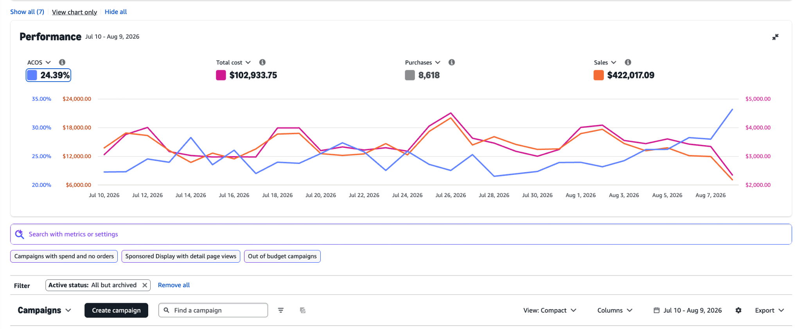
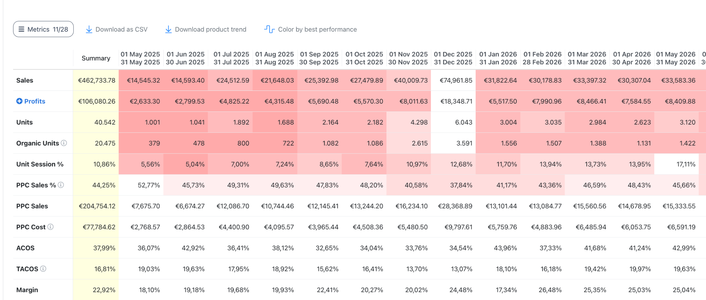
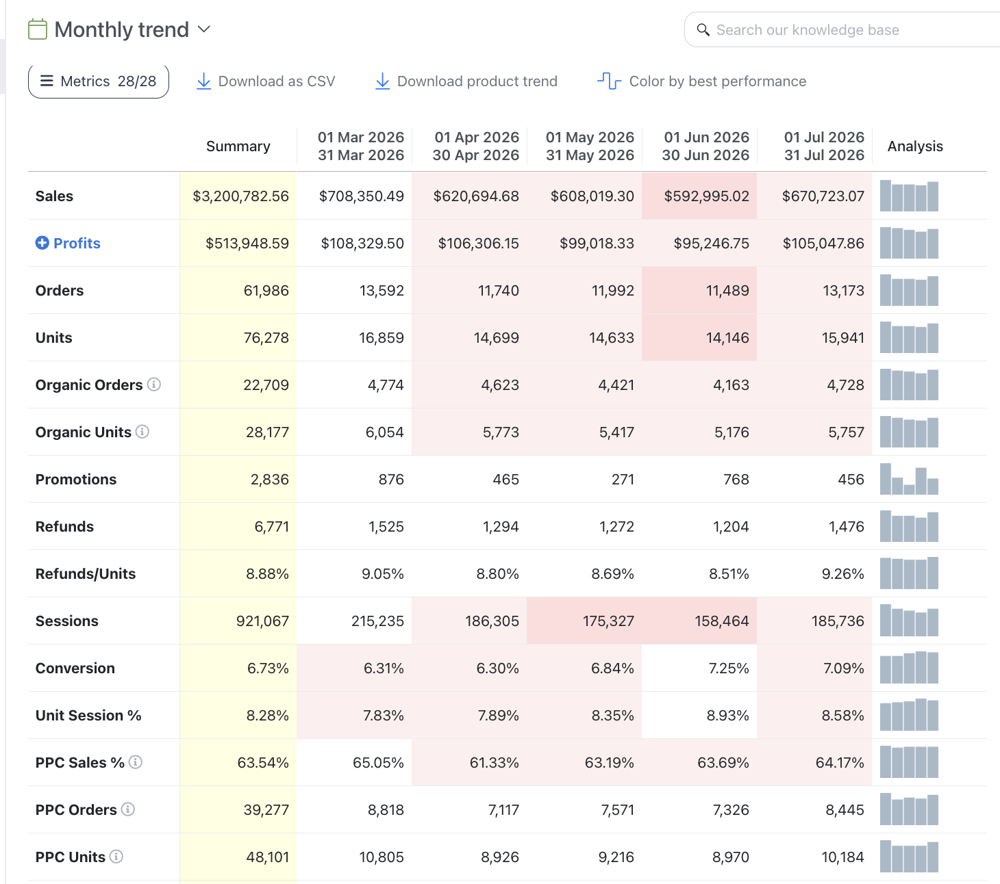
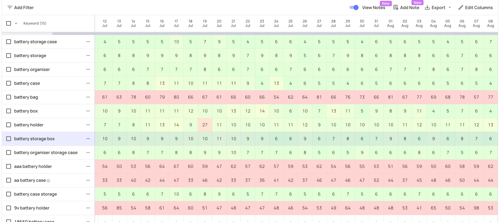
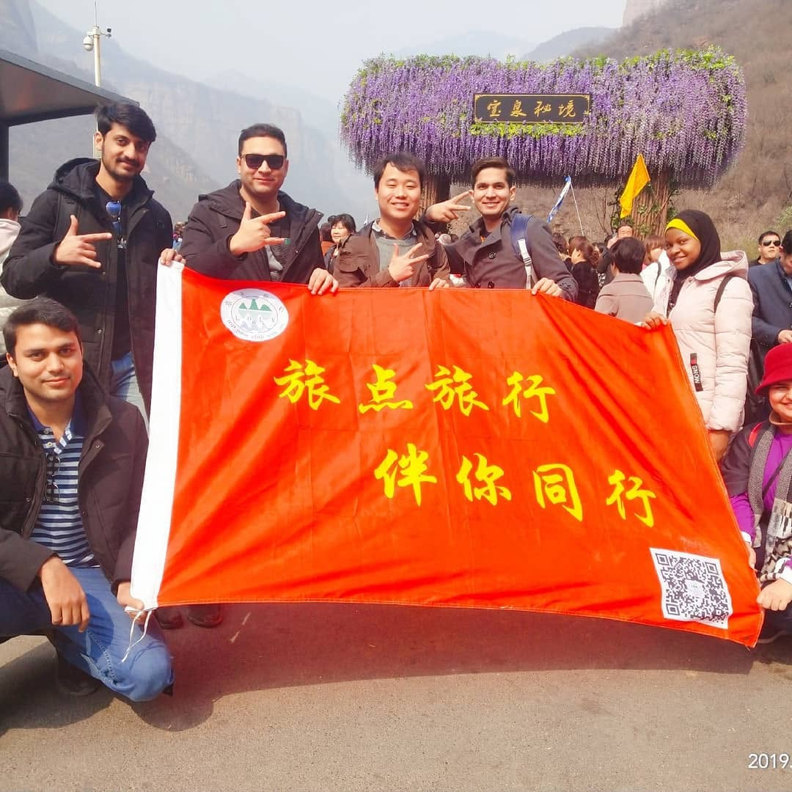

01
Amazon PPC
Sponsored Products, Sponsored Brands, Sponsored Display, campaign architecture, bids, budgets, harvesting, placements and ASIN targeting.
5+ years managing Amazon advertising across the US, UK and EU. I combine hands-on PPC strategy, commercial analysis and AI-assisted workflows to help brands find efficient growth opportunities.
I focus on profitable growth—not simply more spend. My work connects campaign execution with conversion, margins, product economics and the operational systems behind scaling.
Sponsored Products, Sponsored Brands, Sponsored Display, campaign architecture, bids, budgets, harvesting, placements and ASIN targeting.
Product launches, ranking strategy, competitor targeting, promotions, profitability analysis and scalable portfolio decision-making.
Claude, ChatGPT and Make.com workflows for opportunity analysis, reporting, data summaries and repetitive-process reduction.
Excel, macros, Google Sheets, Looker Studio and multi-period analysis across ACOS, TACoS, ROAS, CPC, CTR and CVR.
Portfolio examples use account-level data, sanitized screenshots and practical frameworks. The goal is to show how I think about scale, profitability, growth signals and Amazon advertising operations.

Spend grew 11.7%, purchases grew 17.0%, and cost per purchase improved 4.5% across consecutive 30-day periods.

A product-and-advertising approach that treated customer feedback, conversion and PPC as one growth system.
A practical audit framework for separating brand-defense efficiency from true category-demand expansion.

Sales, profit, traffic, conversion, organic contribution and PPC share—beyond a single ACOS number.

Tracking rank movement across priority terms to connect PPC activity with organic visibility and product momentum.
Agency and e-commerce experience across FMCG, supplements, Home & Kitchen, electronics, apparel, office products and other consumer categories.
Amazon-focused agency experience and performance marketing execution. Reached a two-year milestone and received an “Incrementum Veteran” recognition.
Amazon advertising and marketplace growth work across brand portfolios.
Performance marketing and Amazon account management experience.
E-commerce portfolio and marketplace performance experience.
Amazon-focused growth and advertising experience.
Bachelor’s degree in Software Engineering, 2018. Technical foundations now support my AI, automation and analytics work.
This LinkedIn post marks a two-year milestone with Incrementum Digital and reflects an important period of hands-on Amazon advertising work, collaboration and learning.
Shown as a career milestone—not as a client-performance claim.
My interest in AI predates the current generative-AI wave. After completing Software Engineering at Lancaster University, I moved to Zhengzhou, China, for further study related to AI. The program was interrupted during COVID, but the technical direction stayed with me and now informs how I approach automation and analytics in performance marketing.
Bachelor’s degree in Software Engineering, completed in 2018.
Further study related to AI in an international academic environment before returning during COVID.
Built 5+ years of hands-on Amazon PPC and e-commerce growth experience across US, UK and EU marketplaces.
Bringing technical thinking back into PPC through Claude, ChatGPT, Make.com and data-driven workflows.

I share hands-on Amazon advertising, product-growth, keyword strategy and AI/automation ideas on LinkedIn. The goal is useful practitioner content—not generic motivation.
A growing professional audience around Amazon Ads, e-commerce growth and performance marketing.
View LinkedIn →Follower count shown as 7K+ to stay evergreen; screenshot captured above 7,300.
I use automation where it improves speed and consistency, but I prefer data-driven human judgment over blindly following rules or recommendations.
I’m developing workflows that combine Amazon data with AI-assisted analysis to surface opportunities, summarize performance and reduce repetitive work. I use AI as an analytical layer—not as a replacement for commercial judgment.
For Amazon brands, e-commerce teams, international agencies and performance marketing roles.